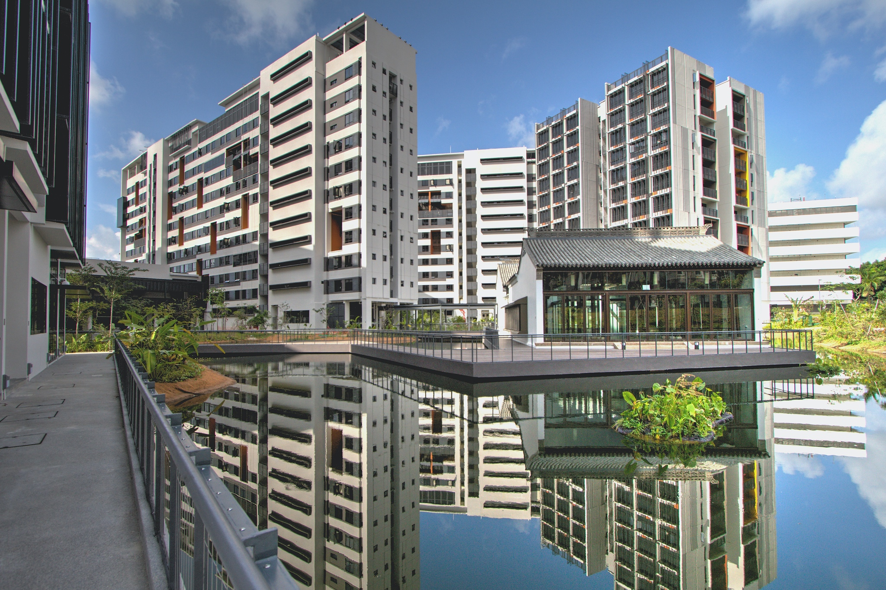
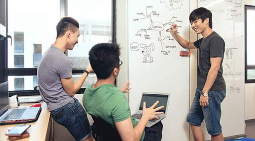
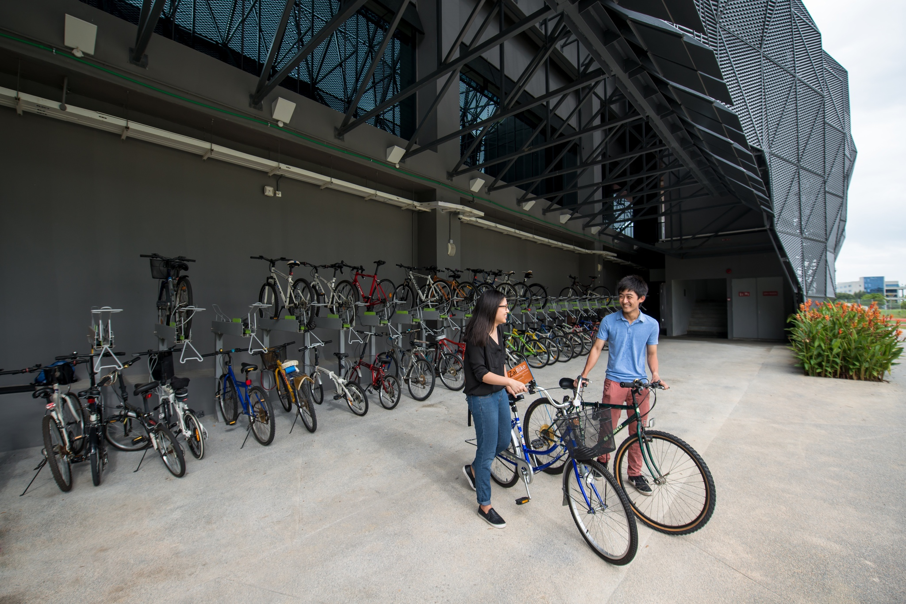
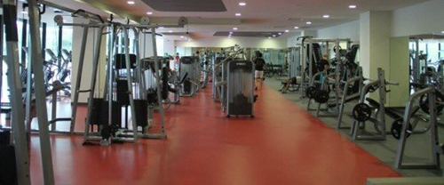
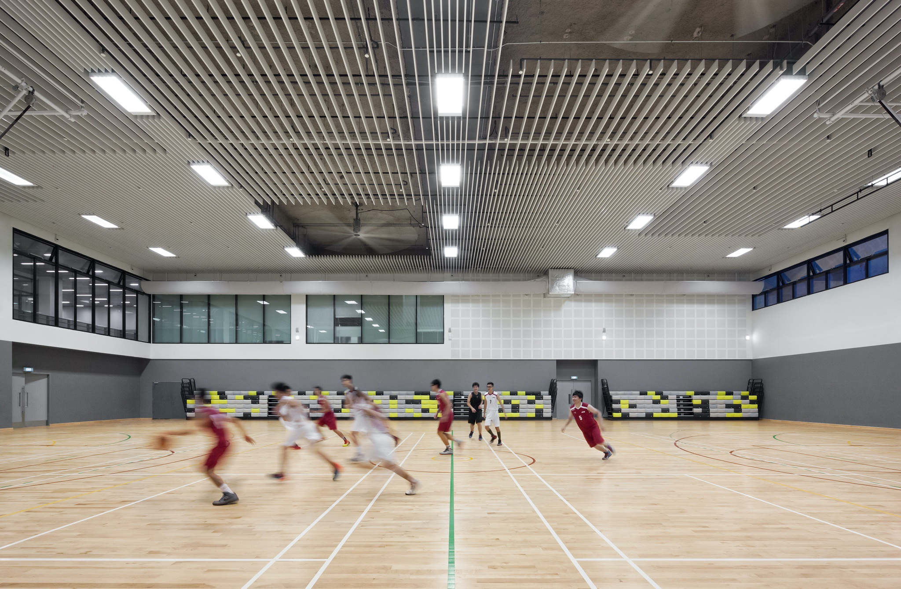
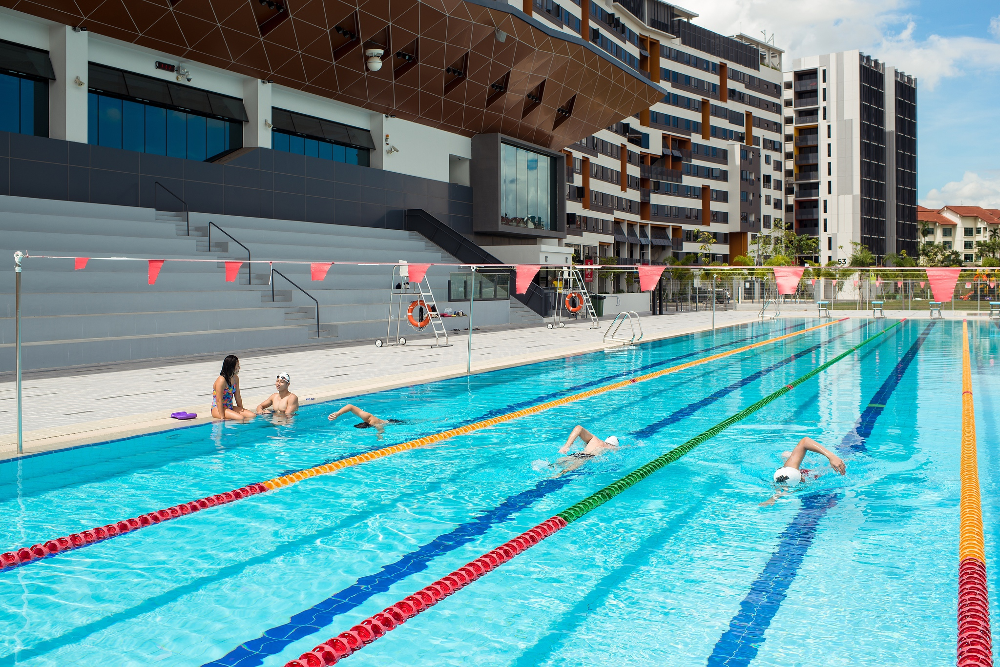

SUTD Virtual Campus Tour
Student Housing
SUTD's staff and student housing blocks are conveniently located on the SUTD campus, just a stone's throw away from the academic blocks and sports facilities. It usually takes residents just 10 minutes to get to class from their rooms! Freshmore undergraduates are required to reside at student housing, specifically in double rooms. Designed to promote interaction and collaboration, residential living aims to foster a sense of community and ownership, and build strong friendships starting from the students’ very first year, where classmates are grouped into clusters in the housing blocks.
Group Study Room
Each block also has group study rooms, each outfitted with clusters of tables for students who prefer to study in groups. These rooms are made for smaller study groups, though they can also be used for discussions.
Recreational Room
Not all the common spaces in Hostel are for studies of course. Each block has two recreational rooms, fitted with a TV screen and beanbags where residents can just relax after a long day of studying.
Hostel Lounge
The hostel lounge is a common space for residents to use, with a board game collection of award winning titles that are available for loan, residents are welcomed to visit the lounge and relax with some fun board games. There are even boards in the hostel lounge that residents can write on using whiteboard markers, facilitating discussions.
Backspace
At the back of Block 55, there is another open-air recreational space for the residents, aptly named Backspace. This open space has been outfitted with tables and chairs, and groups of residents often make it one of their supper locations at night, especially when there’s a nice cool breeze!
Music Room
Part of the Backspace includes a music room for students to jam in. A soundproof air-conditioned room that is open to residents 24/7, the music room is commonly used by students who want to practise and have a jam session together without disturbing the other residents.
Recreational Facilities
The Sports and Recreation Centre has a wide range of facilities to cater to the different interests and needs of its students and staff. Vending machines and benches also make it easy for students to grab a quick supper or drink after a good workout session.
Gym
The equipment and space in the gym is open for all students during its opening hours. Run by staff members, the gym is a good place to work out after a day in class.
Indoor Sports Hall
The sports and recreational centre has 2 indoor sports halls that are mainly used as training spaces and as event venues. They are open for booking by fifth rows and the public for training sessions and as event venues.
Pool
There is an olympic sized swimming pool that is open to all students during the opening hours, perfect for use on a hot day.
Dance Studio
The multiple dance studios mainly allow for the various dance and martial art Fifth Rows to have a formal space to practice with its wooden floors and mirrors.
Track / Field
The track and the field is one part of the sports and recreational centre that is impossible to miss. It is open to all students and staff till 11pm daily, and is commonly used by the sports cluster for their training sessions.
Chinese Structures
On campus are two antique houses, a pavilion and a Chinese opera stage from the Ming and Qing dynasties. They have been restored to their original glory by a team of craftsmen from Suzhou, China, and are used as teaching or recreational spaces.